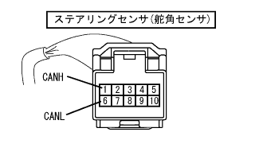

reference)
reference)CAN communication system (without VSC) ECU terminal array |
reference) |
Terminal array
| Can J/C (surface with ground terminal) | Connection position |
|---|---|
| Navigation receiver ASSY (navigation ECU) | 1 |
| Steering sensor (steering angle sensor) | 3 |
| Can J/C (surface without ground terminal) | Connection position |
|---|---|
| DLC3 | 5 |
 |
Connector terminal sequence connected to CAN J/C
| Terminal number | Terminal symbol |
|---|---|
| 1 | Canh |
| 2 | Canl |
 |
Terminal array
| Terminal number | Terminal symbol |
|---|---|
| 4 | CG |
| 6 | Canh |
| 14 | Canl |
| 16 | BAT |
DLC3 inspection
Make IG OFF.
Use SST (Toyota Electrical Tester) to check the resistance of each terminal.
| Terminal number | item | Measurement conditions | standard |
|---|---|---|---|
| 6 (Canh) ← → 14 (Canl) | resistance | IG OFF | 54-69Ω |
| 6 (Canh) ← → 16 (BAT) | resistance | IG OFF | 6KΩ or higher |
| 14 (CANL) ← → 16 (BAT) | resistance | IG OFF | 6KΩ or higher |
| 6 (Canh) ← → 4 (CG) | resistance | IG OFF | 200Ω or higher |
| 14 (CANL) ← → 4 (CG) | resistance | IG OFF | 200Ω or higher |
|  |
Terminal array
| Terminal number | Terminal symbol |
|---|---|
| 1 | Canh |
| 6 | Canl |
 |
Steering sensor (steering angle sensor) Vehicle harness connector side inspection
Ig off the connector of the steering sensor (steering angle sensor).
Use SST (Toyota Electrical Tester) to inspect the resistance of each terminal of the vehicle harness connector.
| Terminal number | item | Measurement conditions | standard |
|---|---|---|---|
| 1 (Canh) ← → 6 (Canl) | resistance | IG OFF | 108-132Ω |
| 1 (Canh) ← → GND | resistance | IG OFF | 200Ω or higher |
| 6 (CANL) ← → GND | resistance | IG OFF | 200Ω or higher |
| 1 (Canh) ← →+B | resistance | IG OFF | 6KΩ or higher |
| 6 (CANL) ← →+B | resistance | IG OFF | 6KΩ or higher |
Terminal array
| Terminal number | Terminal symbol |
|---|---|
| D2 | Canh |
| D3 | Canl |
 |
Navigation receiver ASSY (navigation ECU) Vehicle harness connector side inspection
IG OFF and separate the connector of the navigation receiver ASSY (navigation ECU).
Use SST (Toyota Electrical Tester) to inspect the resistance of each terminal of the vehicle harness connector.
| Terminal number | item | Measurement conditions | standard |
|---|---|---|---|
| D2 (Canh) ← → D3 (CANL) | resistance | IG OFF | 54-69Ω |
| D2 (Canh) ← → GND | resistance | IG OFF | 200Ω or higher |
| D3 (CANL) ← → GND | resistance | IG OFF | 200Ω or higher |
| D2 (Canh) ← →+B | resistance | IG OFF | 6KΩ or higher |
| D3 (CANL) ← →+B | resistance | IG OFF | 6KΩ or higher |